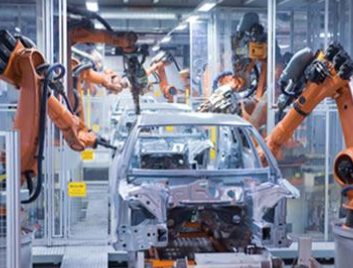

Capítulo 1
Tecnologia, Transformações ds Energia na Indústria Metalúrgica
CONTEXTUALIZANDOO processo industrial iniciado no Reino Unido no século XVIII, foi um marco para a história da humanidade, uma vez que foi responsável por uma boa parte dos postos de trabalho mas também por mudanças estruturais nas sociedades humanas. A indústria moderna surgiu no século XVIII, com a chamada “produção flexível”, que privilegia muito mais a qualidade do que a quantidade. Em muitas indústrias a produção flexível se tornou tão importante que houve uma modernização, que é conhecida como a robótica.
Um fato de grande importância na observação das transformações químicas e físicas é que matéria e energia estão intimamente relacionadas. Essas transformações acontecem com liberação ou absorção de energia, por exemplo, a Energia Luminosa é absorvida na fotossíntese dos vegetais e liberada na queima de uma vela; a Energia Elétrica é liberada em uma pilha e absorvida na recarga de uma bateria de automóvel. Como mencionado, a energia pode ser transformada em outra, da mesma forma que uma substância química também pode ser transformada em interconversão de energia. Veja os exemplos:

• Numa lâmpada, a Energia Elétrica é transformada em Energia Luminosa e Térmica.
• Numa usina termelétrica, a Energia Térmica é transformada em Energia Elétrica.
• Num aquecedor solar, a Energia Solar é transformada em Energia Térmica.
• Num um ferro de passar roupa, a Energia Elétrica é transformada em Energia Térmica.
• Num motor à explosão, a Energia Térmica é convertida em Energia Mecânica.
Em uma reação química, pode haver liberação de Energia Luminosa, Elétrica, Térmica, entre outras.
A combustão é uma reação química que libera calor, Energia Térmica.
Fonte: https://alunosonline.uol.com.br/quimica/conversao-energia-as-reacoes-quimicas.htmlNa combustão completa da gasolina, álcool e óleo diesel são liberados gás carbônico, vapor de água e Energia Térmica. A Energia Térmica é utilizada para mover motores de carros, caminhões, tratores. A energia liberada na combustão do Hidrogênio com o Oxigênio, produzindo água, é utilizada para mover os ônibus espaciais. A Energia Térmica liberada na combustão do gás de cozinha é utilizada no cozimento de alimentos, no aquecimento da água dos aquecedores domésticos. A energia liberada na combustão em forma de calor pode ser medida em calorias ou em Joule.
Energia elétrica => É a energia que se manifesta sob forma de eletricidade em nossas casas. Exemplos: um ventilador transforma energia elétrica em movimento de pás, um computador transforma energia elétrica em processamento de dados. Energia térmica => É a manifestação de energia através da agitação molecular: com maior agitação molecular sentimos mais calor (aquecimento) e com menor agitação molecular sentimos menos calor (resfriamento). Energia luminosa e sonora => Luz e som são formas de energia que se propagam por meio de ondas, porém o som exige necessariamente um meio sólido, líquido ou gasoso para se propagar, enquanto a luz também pode se propagar no vácuo. Exemplos: Um raio libera energia de forma elétrica, luminosa e sonora. Energia química => É a energia potencial das ligações químicas entre os átomos. Sua liberação é percebida, por exemplo, numa combustão. Exemplos: Combustíveis, ou queima de alimentos no organismo = liberação de calor.
PARA SABER MAIS...
Prezado aluno, assista a esses vídeos para saber mais sobre energias!1) Quais as principais transformações de energia existentes?
2) Após assistir aos vídeos acima, explique como o ser humano desenvolveu métodos de transformação de energia.
3) Observe a tirinha abaixo:

O gato insinua que seu dono esqueceu-se de pagar a conta do Sol como se fosse uma conta de energia elétrica. Elabore um pequeno texto descrevendo o que você imagina que ocorreria com nosso planeta caso o Sol deixasse de existir. Utilize as palavras: fotossíntese, alimento, energia química, energia cinética. (MÍNIMO 15 LINHAS)
1) Numa lâmpada, a Energia Elétrica é transformada em Energia Luminosa e Térmica. Numa usina termelétrica, a Energia Térmica é transformada em Energia Elétrica. Num aquecedor solar, a Energia Solar é transformada em Energia Térmica. Num um ferro de passar roupa, a Energia Elétrica é transformada em Energia Térmica.
2) O ser humano na pré-história desenvolveu o uso do fogo como energia para o alimento, aquecimento e proteção, ao longo da evolução tecnológica aprendeu a utilizar métodos para transformação de energia, tais como hidráulica, eólica e solar.
3) (TEXTO PESSOAL) – O aluno deverá discorrer no texto a uma argumentação embasada em transformação de energia pelas plantas, a importância delas ao ciclo ambuiental, bem como a influência solar sonre o planeta.